This quickstart will guide you through the steps to use the Informatica Intelligent Cloud Services Accelerator for Snowflake to create an Informatica Intelligent Data Management Cloud (IDMC) organization, which provides free data processing of up to one billion records per month. You will then learn how to build a data integration mapping and mapping task or data pipeline using Informatica's Data Integration.
The Informatica IDMC provides complete, comprehensive cloud-native and AI-powered data management capabilities, including data catalog, data integration, API and application integration, data prep, data quality, master data management, and a data marketplace, on a foundation of governance and privacy. Informatica IDMC is powered by our AI and machine learning (ML) engine, CLAIRE®, optimized for intelligence and automation, and is built on a modern, elastic, serverless microservices stack that connects data consumers to the data sources they need. It enables you to intelligently discover and understand all the data within and outside the enterprise, access and ingest all types of data wherever and whenever you want, curate and prepare data in a self-service fashion so that it is fit for use, and deliver an authoritative and trusted single view of all your data. Informatica IDMC is the single and most complete platform you will ever need for cloud-native data management.
IDMC Data Integration allows you to load source data from databases, applications, and data files in the cloud or on-premises into Snowflake. Data Integration supports many transformations that can be used to transform and enrich the source data. In addition, pushdown optimization (PDO) can be utilized for some transformations and functions to take advantage of Snowflake compute resources for data processing.
In this lab, you will create a mapping to read two delimited files (Orders and Lineitem) from S3, join the files, perform an aggregation to create a count and total, and write the results into a new table in Snowflake. Then in the mapping task, you will turn on pushdown optimization to enable the processing to occur in Snowflake.
JSON (JavaScript Object Notation) is a text-based data format commonly used between servers and web applications and web-connected devices. Because it is text-based, it is readable by both humans and machines. JSON semi-structured data can be stored in Snowflake variant column alongside relational data. In IDMC, the hierarchy parser transformation parses and transforms hierarchy data to relational data.
In this lab, you will also use sample weather forecast data to create a hierarchical schema, then use it in a mapping to parse and transform the JSON weather forecast data, join them, add an expression to convert the temperature, and then write the data to a new table.
Prerequisites
- Familiarity with Snowflake
- Familiarity with data integration (ETL) concepts
- Familiarity with AWS S3
- Familiarity with hiearchical data
What You'll Learn
By the end of this guide, you'll learn:
- How to create an IDMC organization from Snowflake Partner Connect
- How to view the Snowflake connection configuration in IDMC
- How to configure an S3 connection.
- How to build a data integration mapping to read S3 files and load into Snowflake.
- How to turn on Pushdown Optimization (PDO) or ELT in a mapping task to use Snowflake's warehouse to process the data integration mapping.
- How to verify PDO is successfully enabled.
- How to configure a hierarchical schema
- How to build a data integration mapping to flatten JSON data into relational data
- All of the above without writing a single line of code.
What You'll Need
- A Snowflake account with access to the ACCOUNTADMIN role
- An email address for IDMC registration
- Configured Snowflake connection in IDMC org if your org will not be registered from Partner Connect. Documentation on how to create a Snowflake connection
- AWS S3 bucket access and credential
What You'll Build
- An Informatica Data Management Cloud organization
- An S3 connection
- A data integration mapping to load S3 files into Snowflake
- A mapping task to use PDO for processing the data integration mapping
- A hierarchical schema
- A data integration mapping to parse JSON weather data and flatten it.
If you haven't already, register for a Snowflake free 30-day trial. You can also use an existing Snowflake account as long as you have ACCOUNTADMIN access in that account.
Please select a region which is physically closest to you, and select the Enterprise edition so you can leverage some advanced capabilities that are not available in the Standard Edition.
After registering, you will receive an email with an activation link and your Snowflake account URL. Bookmark this URL for easy, future access. After activation, you will create a user name and password. Write down these credentials.
Resize your browser window, so that you can view this guide and your web browser side-by-side and follow the lab instructions. If possible, use a secondary display dedicated to the lab guide.
Step 1
- Login to Snowflake Snowsight.
- Switch role to ACCOUNTADMIN.
- Click Admin > Partner Connect.
- Search for Informatica.
- Click Informatica tile.

Step 2
- Note the objects that will be created in Snowflake.
- Click Connect.

Step 3
- Click Activate.

Step 4
- Fill in the Informatica registration form.
- Select a Data Center in your region.
- Click Submit.
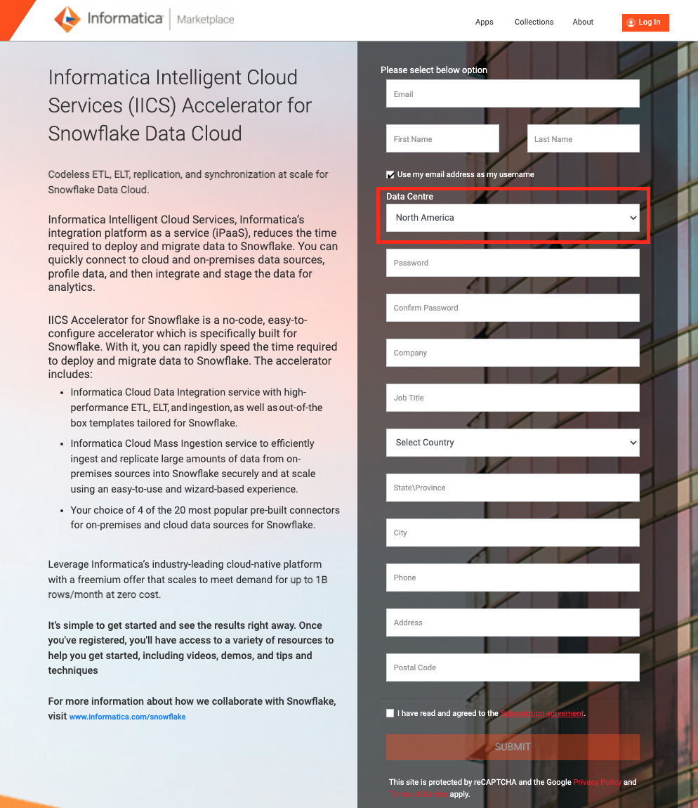 - Upon successful registration, you will receive an email with the subject line: Thanks for signing up for the Informatica Intelligent Cloud Services Accelerator for Snowflake.

Step 5
- This page will automatically open up in your browser. Bookmark this page for future reference. Please also read through Knowledge Base materials and demo recording for more information.
- Click the region you selected in step 4 to go to the Login page.

Step 6
- Enter your username and password.
- Click Log In.

Step 7
- The first time logging in, you will be prompted to enter a security question and answer. Fill them in.
- Click Log In.

- The Sample Use-Cases walkthrough page shows up. Click "Don't show this again".

- To re-visit the Sample Use-Cases walkthrough page, click ? at the top right and choose Walkthroughs. Feel free to go through the sample use-cases walkthrough at your convenience.

- In the next section, we will look at the Snowflake connection that was created by the registration process.
The Snowflake connection is automatically configured in the IDMC organization when you create the organization through Snowflake Partner Connect. Let's take a look at the connection.
Step 1
- Click Administrator in the service selector page.

- Click Connections on the left panel.

- Click the Snowflake connection that was created by the registration process. Your connection name will have Snowflake followed by your Snowflake account name.
- Following is a screenshot of a Snowflake connection. Note the properties i.e. Snowflake objects under the Connection Section. 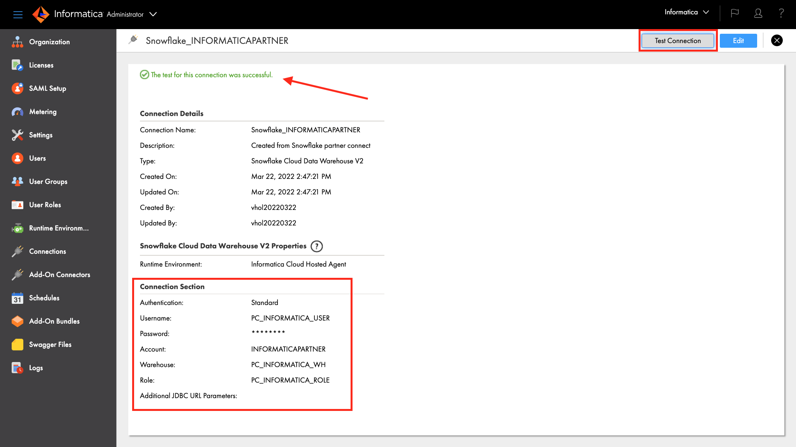
- Click Test Connection button and you should see a successful test notification.
- In the next section, we will review the Snowflake objects that were created by Partner Connect.
As described in Step 2 of Create IDMC Organization section, a set of Snowflake objects were created. Those objects are Database, Warehouse, System User, and System Role.
Let's take a look at those objects.
Step 1
- Go to Worksheets in Snowflake and perform the following queries.
Step 2
- Run the following query to show the database object.
show databases like 'PC_INF%';
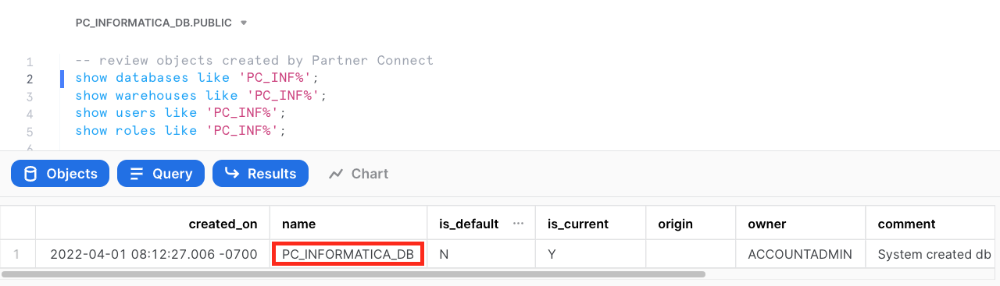
- Run the following query to show the warehouse object.
show warehouses like 'PC_INF%';

- Run the following query to show the user object.
show users like 'PC_INF%';

- Run the following query to show the role object.
show roles like 'PC_INF%';

- Now we're ready to start building our data integration pipeline.
An AWS S3 connection is required to access and read an AWS S3 bucket. Follow configuration steps below to create the S3 connection.
Note that the S3 connection requires that the S3 objects be encrypted. If you are doing this lab live, you will be given an Access Key and Secret Key to use. Alternatively, you can download the files at the end of this page and load them to your own S3 bucket.
Step 1
- Login to IDMC.
- Click Administrator in the service selector page.
Step 2
- Click Connections on the left panel.
- Click New Connection button to create a new connection.

Step 3
- Enter S3 in the Connection Name field.
- Select Amazon S3 v2 from the Type dropdown field.
- Select Informatica Cloud Hosted Agent from the Runtime Environment dropdown field.
- Enter your access key in the Access Key field.
- Enter your secret key in the Secret Key field.
- Enter S3 bucket name in the Folder Path field.
- Select your bucket's region from the Region Name dropdown field.
- Click Test Connection button. If the configuration is correct, the page should display "The test for this connection was successful."
- Click Save button. 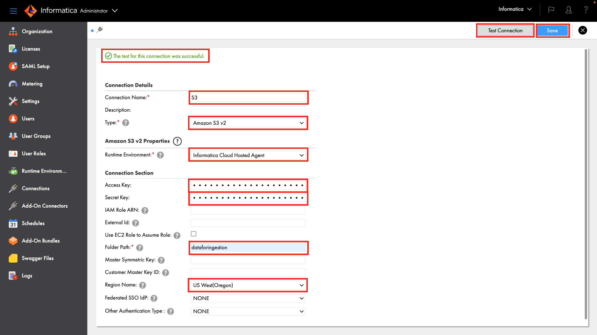 Reference: AWS S3 V2 Connector Documentation
- You should have an AWS S3 and Snowflake connections configured.

Step 4 (Alternative method for using your own S3 bucket)
- Click to download the following files.
orders.tbl
Step 1
- Click the Service Selector at the top left, then select Data Integration service.

Step 2
Let's create a project to store our mapping or assets.
- Click Explore on the left panel.
- Click New Project to create a new project. 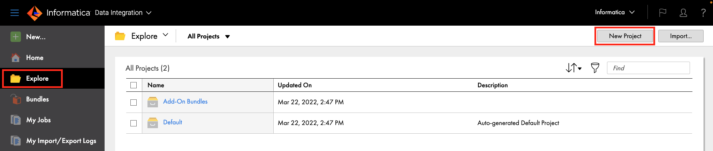
- Enter Hands-on Lab in the Name field.
- Click Save.

- Click Hands-on Lab project.

IDMC Data Integration allows you to load source data from databases, applications, and data files in the cloud or on-premises into Snowflake. Data Integration supports many transformations that can be used to transform and enrich the source data. In addition, pushdown optimization (PDO) can be utilized for some transformations and functions to take advantage of Snowflake compute resources for data processing.
In this lab, you will create a mapping to read two delimited files (Orders and Lineitem) from S3, join the files, perform an aggregation to create a count and total, and write the results into a new table in Snowflake. Then in the mapping task, you will turn on pushdown optimization to enable the processing to occur in Snowflake.
Step 1
Create a new mapping
- Click New...
- Click Mappings
- Select Mapping
- Click Create
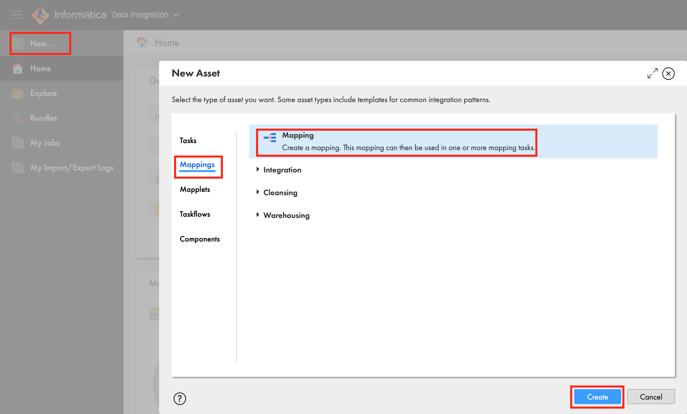 - Under properties, enter m_S3_Orders_Lineitem_into_Snowflake in Name field.
- Ensure that Location is Hands-on Lab. If not, click Browse and select it. 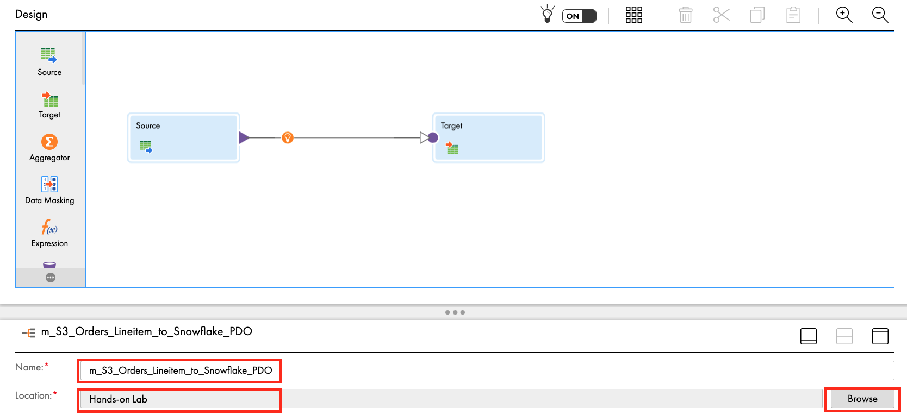
Step 2
Let's configure the Orders data source from S3.
- Click the Source transform in the mapping canvas to assign its properties.
- In the General tab, enter src_S3_Orders in the Name field.

- In the Source tab, select S3 in the Connection dropdown field.
- Click Select to select a source file.

- Click on dataforingestion S3 bucket.
- From the results on the right, select orders.tbl file.
- Click OK.

- Click Format dropdown field and select Flat.
- Click Formatting Options.

- Enter a vertical bar character in the delimiter field.
- Click Data Preview to view the first 10 records.
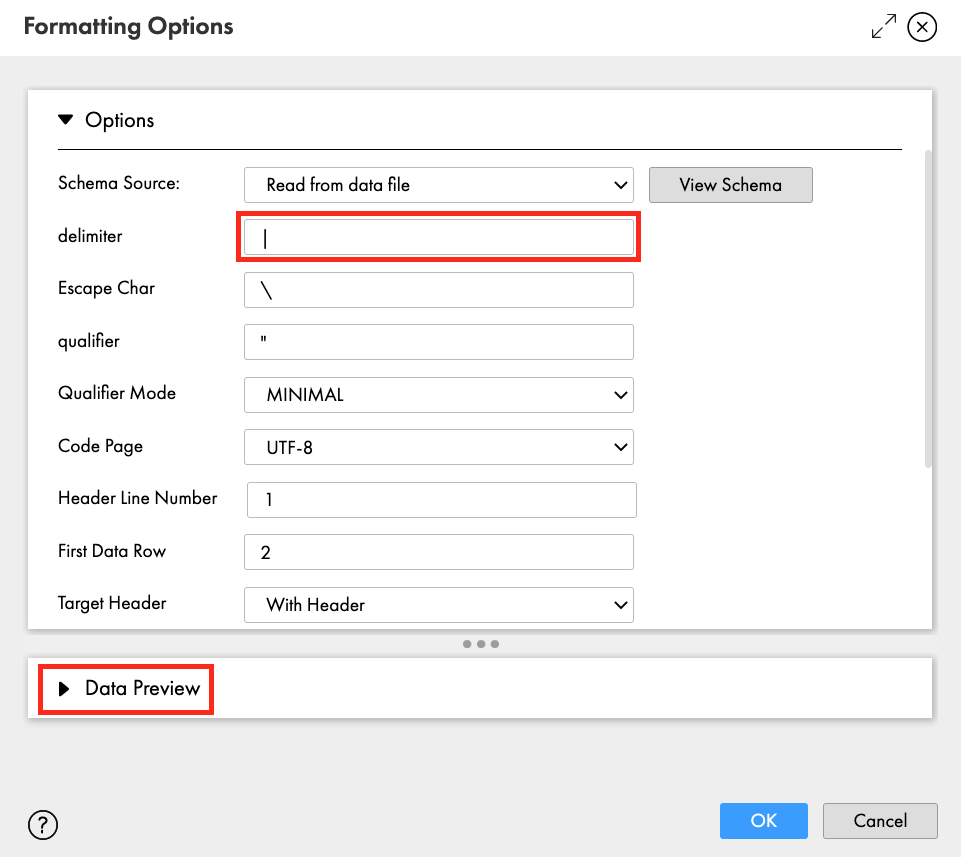 - Records should be separated by fields.

- Click OK.
- In the Fields tab, select fields 7, 8, and 9. Then click trash icon to remove those fields.
- Click Yes when prompted.

- Let's edit the o_totalprice metadata so that it is a decimal field.
- Click Options dropdown, select Edit Metadata.
- Click flat_string Native Type field for o_totalprice and select flat_number.
- Change the Type to decimal.
- Change the Native Precision and Precision to 38.
- Change the Native Scale and Scale to 2.
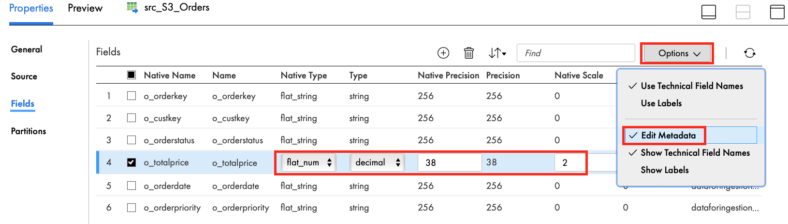 - Click Save to save work in progress.
Step 3
Now we will add the Lineitem file as another data source. The steps are the same as the above Orders data source.
- From the transformation palette, drag Source transform and drop in the mapping canvas.

- Let's assign its properties.
- In the General tab, enter src_S3_Lineitem in the Name field.
- In the Source tab, select S3 in the Connection dropdown field.
- Click Select to select a source file.
- Click on dataforingestion S3 bucket.
- From the results on the right, select lineitem.tbl file.
- Click OK.
- Click Format dropdown field and select Flat.
- Click Formatting Options.
- Enter a vertical bar character in the delimiter field.
- Click Data Preview to view the first 10 records.
- Records should be separated by fields.
- Click OK.
- In the Fields tab, remove all fields except l_orderkey, l_extendedprice, l_discount, l_tax.
- Click Yes.
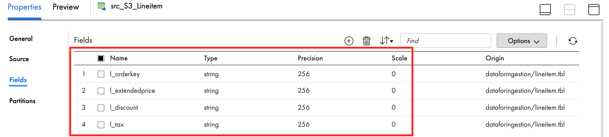 - Click Save to save work in progress.
Step 4
Let's join the two data sources.
- From the transformation palette, drag the Joiner transform and drop it over the line between the src_S3_Orders source and target transforms. The Joiner should now be linked to the Orders and target. If not, manually link them.
- Click align icon to align transformations in the mapping canvas.

- Click the plus icon above the Joiner to expand.
- Link src_S3_Lineitem to the Detail of Joiner transform. 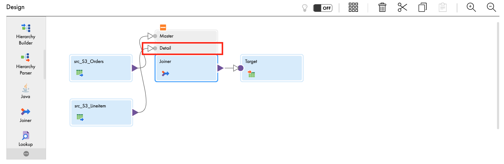
- Let's assign the Joiner properties.
- In the General tab, enter jnr_orders_lineitem in the Name field.
- In the Join Condition tab, click the plus icon to add a new condition.
- Select o_orderkey for Master and l_orderkey for Detail.

- In the Advanced tab, check the Sorted Input checkbox.

- Click Save to save work in progress.
Step 5
Now we will add an Aggregator transformation in the mapping to calculate the number of items for an order and the total of all items.
- From the transformation palette, select Aggregator transformation, drag and drop between the exp_itemtotal and Target in mapping canvas window.
- Click align icon to align transformations in the mapping canvas.

- Let's assign the properties.
- In the General tab, enter agg_item_count_and_order_total in the Name field.
- In the Group By tab, click the plus icon to add new fields.
- Add the following fields:
o_orderkey
o_custkey
o_orderstatus
o_totalprice
o_orderdate
o_orderpriority - When completed, the Group By tab properties should look like this:

- In the Aggregate tab, click the plus icon to add a new field.
- Enter itemcount in the Name field.
- Select integer in the Type dropdown field.
- Enter 10 in the Precision field.
- Enter 0 in the Scale field.
- Click OK.
- Click Configure to configure the expression.
- Enter count(l_orderkey) in the Expression field. This function will result in the total number of items in an order.
- Click Validate.
- Click OK.
- Click the plus icon to add another new field.
- Enter total_calc in the Name field.
- Select decimal in the Type dropdown field.
- Enter 38 in the Precision field.
- Enter 2 in the Scale field.
- Click OK.
- Click Configure to configure the expression.
- Enter the following in the Expression field. This function will add the total of all items in an order.
sum(to_decimal(l_extendedprice) * (1-to_decimal(l_discount)) * (1+to_decimal(l_tax)))
- Click Validate.
- Click OK.
- When completed, your Expression tab properties should look like this:

- Click Save to save work in progress.
Step 6 (Optional)
Now we will add another expression to rename the fields so that they look better and are in the order we want in the Snowflake table. This is an optional transformation.
- From the transformation palette, drag Expression transform and drop it over the line between the agg_item_count_and_order_total and target transforms. The expression should now be linked to the aggregator and Target transforms. If not, manually link them.
- Click align icon to align transformations in the mapping canvas.

- Let's assign the properties.
- In the General tab, enter exp_rename_fields in the Name field.
- In the Expression tab, click the plus icon to add the following fields:
Field Name | Type | Precision | Scale | Expression |
orderkey | string | 255 | 0 | o_orderkey |
custkey | string | 255 | 0 | o_custkey |
orderdate | string | 255 | 0 | o_orderdate |
orderpriority | string | 255 | 0 | o_orderpriority |
orderstatus | string | 255 | 0 | o_orderstatus |
totalprice | decimal | 38 | 2 | o_totalprice |
- When completed, your Expression tab properties should look like this:

- Click Save to save work in progress.
Step 7
Lastly the target table is going to be in Snowflake.
- Click Target to set a target properties.
- In the General tab, enter tgt_Snowflake in the Name field.
- In the Incoming Fields tab, click plus icon to add a field rule.
- Click Include operator and change it to Exclude.
- Click Configure. 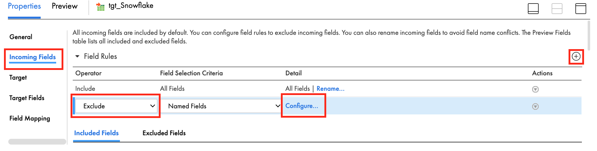
- Select all fields except the following:
custkey
itemcount
orderdate
orderkey
orderpriority
orderstatus
total_calc
totalprice - When completed, the Incoming Fields tab should look like this:

- Click Select to select target table.

- Select Create New at Runtime for Target Object.
- Enter ORDERSLINEITEM in Object Name field.
- Enter TABLE in the TableType field.
- Enter PC_INFORMATICA_DB/PUBLIC in Path field.

- The Target Fields tab should look like this:

- The Field Mapping tab should look like this:

Let's configure Pushdown Optimization (PDO) in the Mapping Task and execute it.
Step 1
- Click Save to save and validate the mapping.
- Click 3 dots icon to create a Mapping task from the mapping 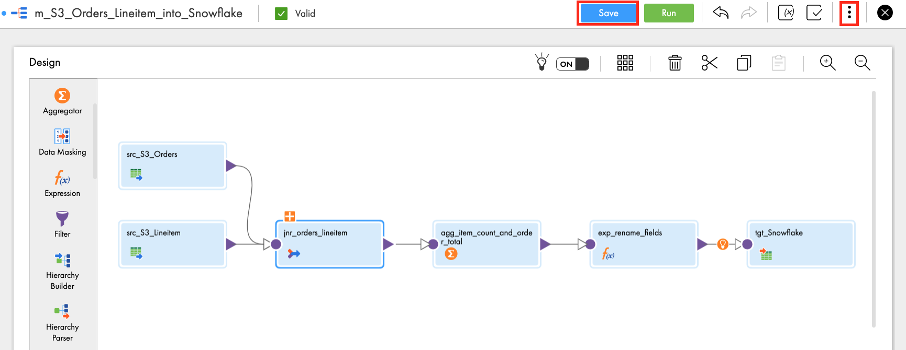
- Select New Mapping Task...

- In the New mapping task window, enter mct_S3_Orders_Lineitem_to_Snowflake_PDO in the Name field.
- Select Hands-on Lab for Location.
- Select Informatica Cloud Hosted Agent for Runtime Environment.
- Click Next.

- Scroll down to the Pushdown Optimization section.
- Select Full from the Pushdown Optimization dropdown list.
- Check Create Temporary View and Create Temporary Sequence.
- Click Finish.

- Click Run to execute the mapping task.

Step 2
View job execution progress.
- Click My Jobs to monitor the job execution.

- Click Refresh icon when the "Updates available" message appears.
- When the job is completed, make sure Status is Success. 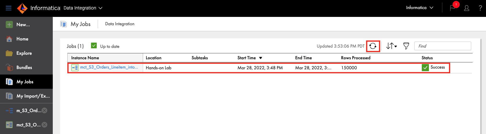
- Drill down to the completed job by clicking the instance name. Then click Download Session Log to view the log.
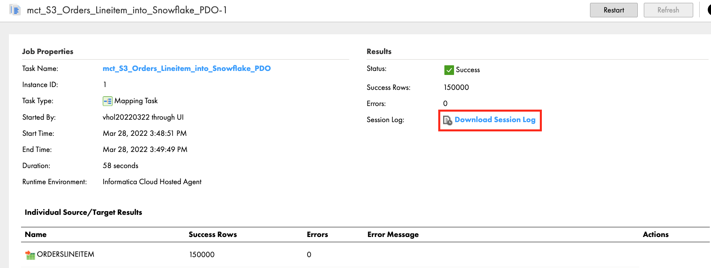 - In the log you will see a message indicating that Pushdown Optimization is successfully enabled.

- You will also see an INSERT SQL statement that Informatica generated for execution in Snowflake.
INSERT INTO "PC_INFORMATICA_DB"."PUBLIC"."ORDERSLINEITEM"("orderkey","custkey","orderdate","orderpriority","orderstatus","totalprice","itemcount","total_calc") SELECT t5.t5c6, t5.t5c7, t5.t5c10, t5.t5c11, t5.t5c8, t5.t5c9, t5.t5c12::NUMBER(18,0), t5.t5c13 FROM (SELECT t3.t3c0, t3.t3c1, t3.t3c2, t3.t3c3, t3.t3c4, t3.t3c5, t3.t3c0 c0, t3.t3c1 c1, t3.t3c2 c2, t3.t3c3 c3, t3.t3c4 c4, t3.t3c5 c5, COUNT(t1.t1c0)::NUMBER(10,0), SUM(((t1.t1c1) * (1 - (t1.t1c2))) * (1 + (t1.t1c3))) FROM (SELECT t0."l_orderkey"::VARCHAR(256), t0."l_extendedprice"::VARCHAR(256), t0."l_discount"::VARCHAR(256), t0."l_tax"::VARCHAR(256) FROM "PC_INFORMATICA_DB"."PUBLIC"."ORDERSLINEITEM_1617648173588" AS t0) AS t1(t1c0 , t1c1 , t1c2 , t1c3) Join (SELECT t2."o_orderkey"::VARCHAR(256), t2."o_custkey"::VARCHAR(256), t2."o_orderstatus"::VARCHAR(256), (t2."o_totalprice"::NUMBER(38,2))::DOUBLE, t2."o_orderdate"::VARCHAR(256), t2."o_orderpriority"::VARCHAR(256) FROM "PC_INFORMATICA_DB"."PUBLIC"."ORDERSLINEITEM_1617648173277" AS t2) AS t3(t3c0 , t3c1 , t3c2 , t3c3 , t3c4 , t3c5) ON t3.t3c0 = t1.t1c0 GROUP BY 1, 2, 3, 4, 5, 6) AS t5(t5c0 , t5c1 , t5c2 , t5c3 , t5c4 , t5c5 , t5c6 , t5c7 , t5c8 , t5c9 , t5c10 , t5c11 , t5c12 , t5c13)
Step 3
- In Snowflake Snowsight, you should see 150,000 rows inserted in the ORDERSLINEITEM table.

- You can also view the Informatica-generated INSERT statement that was executed in the Snowflake query history page. Use Filter and filter for INSERT statement.

Step 1
JSON (JavaScript Object Notation) is a text-based data format commonly used between servers and web applications and web-connected devices. Because it is text-based, it is readable by both humans and machines. JSON semi-structured data can be stored in Snowflake variant column alongside relational data. In IDMC, the hierarchy parser transformation parses and transforms hierarchy data to relational data.
In this section, we'll load some JSON-formatted weather data into the PC_INFORMATICA_DB database. You will then use it to create a hierarchical schema, then use it in a mapping to parse and transform the JSON weather forecast data, join them, add an expression to convert the temperature, then write to a new table.
For this step we will use standard Snowflake SQL commands to create a table with a Snowflake VARIANT column, create an external stage (pointing to an S3 buket), re-size our warehouse to Large to speed up the load, run a Snowflake COPY command to load the data, and importantly, re-size the warehouse back to X-Small after all of the commands complete.
- In Snowflake Snowsight, execute all of the following SQL statements.
-- Set the correct ROLE, WAREHOUSE, and SCHEMA
use role PC_INFORMATICA_ROLE;
use warehouse PC_INFORMATICA_WH;
use schema PC_INFORMATICA_DB.PUBLIC;
-- Create the table
create or replace table pc_informatica_db.public.daily_14_total (
v variant,
t timestamp);
-- Define a stage that describes where the data will be loaded from
create or replace stage weather_data_s3
url = 's3://sfquickstarts/VHOL Informatica Data Management/WEATHER/';
-- Re-size the warehouse so we can load the data quicker
alter warehouse pc_informatica_wh set warehouse_size = large;
-- Load the data
copy into daily_14_total
from (select $1, to_timestamp($1:time)
from @weather_data_s3)
file_format = (type=json);
-- Set the warehouse back to the original size
alter warehouse pc_informatica_wh set warehouse_size = xsmall;

Step 1
Copy JSON data from the Snowflake table and save it locally in your computer.
- Go to Worksheets, execute the following query:
select * from daily_14_total limit 1000;
- Click the first row in column V in the result panel.
- Click copy icon to copy JSON string to clipboard.

- Save the copied JSON in a text file locally on your computer. Filename: daily_14.json.
Step 2
Create a Hierarchical Schema in IDMC.
- In IDMC, go to Data Integration service.
- Click New.
- Click Components.
- Select Hierarchical Schema and click Create.

- Enter Daily_14 in the Name field.
- Select Hands-on Lab in the Location field if not already filled in.
- Click Upload.

- Click Choose File and select the JSON file you saved in Step 1 above.
- Click Validate and you should see "JSON Sample is Valid" message.
- Click OK.

- Click Save.

Create a mapping to read from the daily_14_total table, use hierarchy parser to parse the JSON data, join the relational data, convert the temperature and write to a new Snowflake table.
Step 1
- Click New...
- Click Mappings.
- Select Mapping.
- Click Create.
- Under properties, enter m_transform_JSON in Name field.
- Ensure Location is Hands-on Lab. If not, click Browse and select it.

Step 2
Let's configure the data source from Snowflake.
- Click Source transform in the mapping canvas to assign its properties.
- In General tab, enter src_daily_14 in the Name field.
- In Source tab, select **Snowflake_[account name]** in the Connection dropdown field.
- Click Select to select the source table/object.
- In Select Source Object window, scroll down to find PC_INFORMATICA_DB and click it. Then click PUBLIC schema.
- Select DAILY_14_TOTAL in the tables list on the right pane.
- Click OK.

- Expand Query Options.
- Click Configure for Filter.

- Click Filter Condition dropdown and select Advanced.
- Paste the following in the filter condition:
DAILY_14_TOTAL.T >= to_date('2021-02-01','YYYY-MM-DD') AND DAILY_14_TOTAL.T <= to_date('2021-02-28','YYYY-MM-DD') AND DAILY_14_TOTAL.V:city:country='US' and DAILY_14_TOTAL.V:city:name = 'San Francisco'
- Click OK. 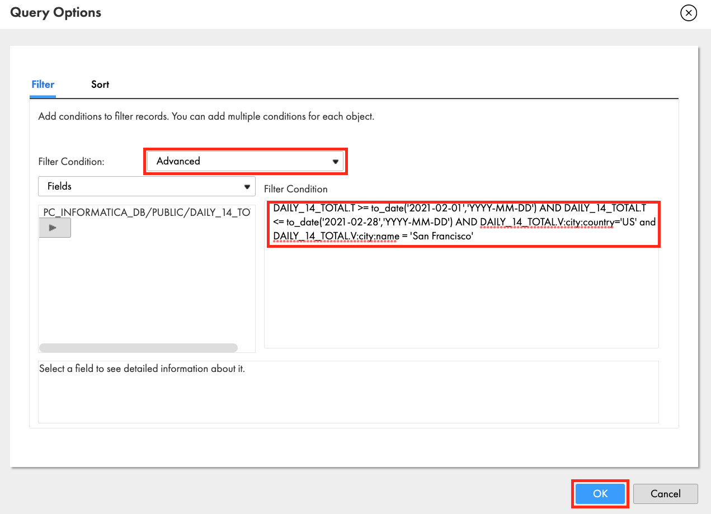
- Click Save to save work in progress.
Step 3
Add HierarchyParser transform and configure it.
- Drag and drop Hierarchy Parser transform on to the canvas. 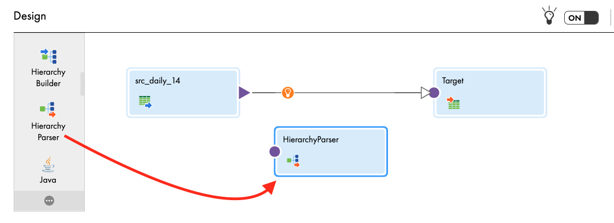
- In General tab, enter hp_parse_JSON in the Name field.
- In Input Settings tab, click Select and select the Daily_14 hierarchical schema. Click OK.

- Select the link from src_daily_14 to Target and click delete icon.
- Link src_daily_14 to hp_parse_JSON.
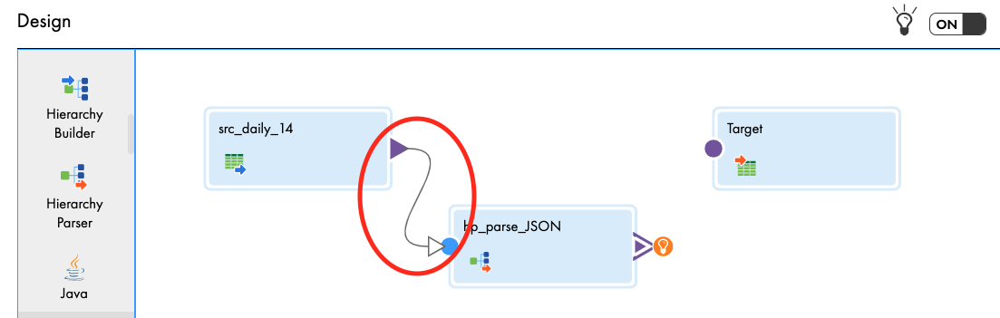 - In Input Field Selection tab, drag and drop V field from Incoming Fields to Input field in Hierarchical Schema Input Fields.

- In Field Mapping tab, expand root element by clicking the triangle icon or expand/contract icon.
- Select (check) the following fields: country, name, dt, humidity, max, min, description in the Schema Structure panel. Selected fields will automatically show up in the Relational Fields on the right panel. Primary keys and foregin keys are auto created to make the fields relational.

- Click Save to save work in progress.
Step 4
Add a Joiner transform to link root and data relational field groups and configure it.
- Drag and drop Joiner transform on the canvas.
- Link hp_parse_JSON to the Master in Joiner transform.
- Select Output Group window appears. Select root and click OK.

- Link hp_parse_JSON again but this time to the Detail in Joiner transform.
- Select data in Output Group and click OK.

- In General tab, enter jnr_temperature in the Name field.
- In Join Condition tab, click add icon.
- Select PK_root (bigint) in Master column and FK_root (bigint) in the Detail.

- In Advanced tab, select Sorted Input. 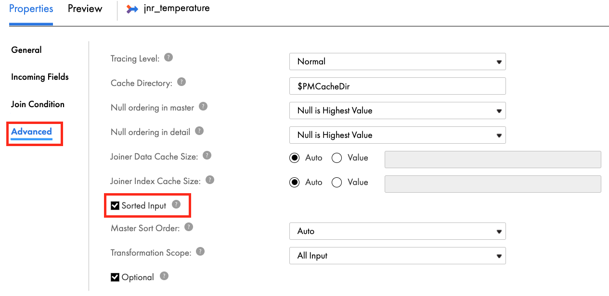
- Click Save to save work in progress.
Step 5
Add another Joiner transform to join and configure it.
- Drag and drop Joiner transform on the canvas.
- Link jnr_temperature to the Master in Joiner transform.
- Link hp_parse_JSON to the Detail in Joiner transform.

- Select Output Group window appears. Select weather and click OK. 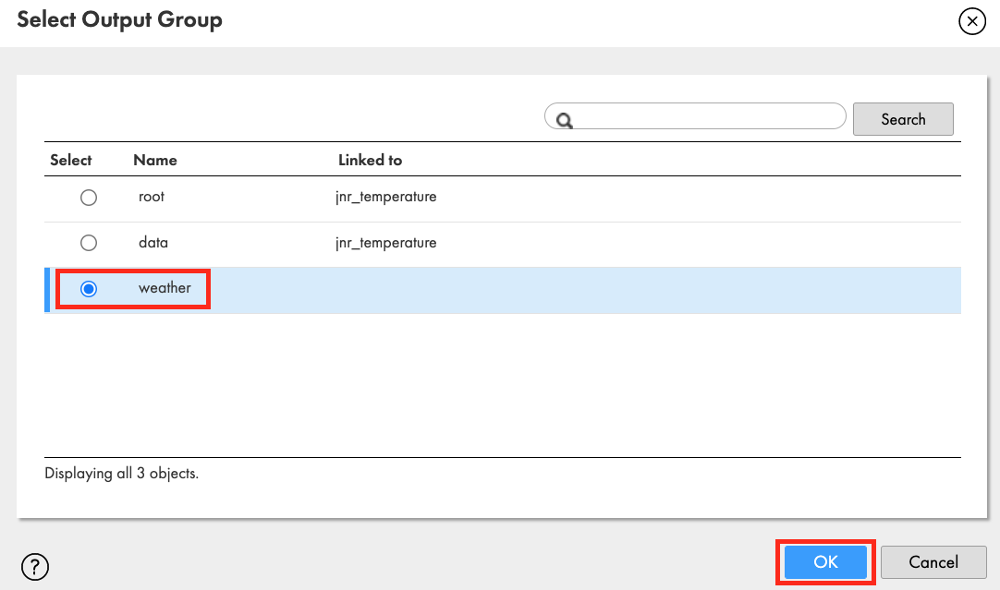
- In General tab, enter jnr_condition in the Name field.
- In Join Condition tab, select PK_data (bigint) in Master and FK_data (bigint) in Detail.

- In Advanced tab, select Sorted Input.
- Click Save to save work in progress.
Step 6
Add Expression transform to create an ordered fields in the target and convert temperature from Kelvin to Fahrenheit.
- Drag and drop Expression transform on the canvas.
- Link jnr_condition to the Expression.

- In the General tab, enter exp_convert_temperature in the Name field.
- In the Expression tab, add the following fields and expressions.
Field Name | Type; Precision; Scale | Expression |
Date | Date/time; 29; 9 | Add_To_Date(To_Date( ‘1970-01-01', ‘YYYY-MM-DD'),‘SS',dt) |
City | String; 255; 0 | name |
Country_Name | String; 255; 0 | country |
Min_Temp | Decimal; 10; 1 | (min - 273.15) * 9/5 + 32 |
Max_Temp | Decimal; 10; 1 | (max - 273.15) * 9/5 + 32 |
Condition | String; 100; 0 | description |
Humidity_Level | Double; 15; 0 | humidity |

Step 7
Finally, let's configure the Target.
- Link exp_convert_temperature to Target.
- In the General tab, enter tgt_sf_weather_forecast in the Name field.
- In the Incoming Fields tab, change All Fields to Named Fields by clicking on that field.
- Then click Configure to select fields. Select the fields that were created in the exp_convert_temperature expression transform.

- In the Target tab, select Snowflake connection.
- Click Select to select a table.
- In the Target Object window, check Create New at Runtime.
- Enter SF_WEATHER_FORECAST in Object Name field.
- Enter TABLE in TableType.
- Enter PC_INFORMATICA_DB/PUBLIC in Path.
- Click OK.

- In the Field Mapping tab, the target fields are automatically mapped from the incoming fields.

- Click Save.
Step 1
Let's configure a Mapping Task and execute it.
- Click 3 dots to create Mapping task from the mapping
- Select New Mapping Task...

- In the New mapping task window, enter mct_transform_JSON in the Name field.
- Select Hands-on Lab for Location.
- Select Informatica Cloud Hosted Agent for Runtime Environment.
- Click Finish.

- Click Run to execute the mapping task.
Step 2
Validate job execution result.
- Click My Jobs to monitor the job execution.
- Click Refresh icon when "Updates available" message appears.
- When the job is completed, make sure the Status is Success.
- 864 rows were processed.

- In the Snowflake table preview, there are 864 rows as well. Notice that the columns label are in the order as configured in the Expression transform.

Congratulations! You have successfully created a free IDMC organization, completed an ELT workload to load S3 files into Snowflake, and transformed JSON using the IDMC Data Integration service.
You can utilize your new IDMC org to load data from various data sources into Snowflake and perform data transformations using Data Integration service. With this free IDMC org, you can load 1 billion records per month for free. In this guide, you learned how to use Pushdown Optimization/ELT to load S3 files into Snowflake, and how to transform JSON data using Hierarchy Parser transformation.
What we've covered in this guide
- Create an IDMC org via Snowflake Partner Connect
- Review Snowflake connection in IDMC
- Review Snowflake objects created by the registration process
- Configure AWS S3 connection
- Create a Project folder
- Create a data integration mapping to load S3 files into Snowflake
- Configure Pushdown Optimization
- View mapping job result
- Confirm Pushdown Optimization is activated
- View result in Snowflake
- Create JSON schema in Data Integration service
- Use Hierarchy Parser transformation
- Create a data integration mapping to load transform JSON hierarchical data into relational format
- Create a mapping task
- View mapping job result
- View result in Snowflake
Continue learning and check out these guides
Documentation: Informatica Data Integration
Documentation: Snowflake connector
Landing page for Informatica Intelligent Cloud Services Accelerator for Snowflake